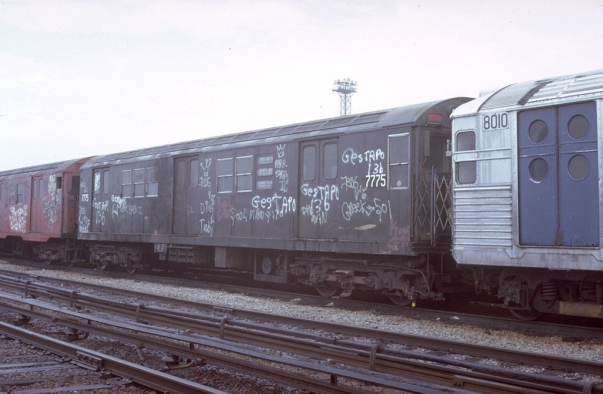

New York City Subway
Introduction subhead here
The New York City Subway is a rapid transit system owned by the City of New York and leased to the New York City Transit Authority,[6] a subsidiary agency of the Metropolitan Transportation Authority. It is one of the largest public transportation systems in the world by number of stations, with 468 stations in operation (421, if stations connected by transfers are counted as single stations).[1] The New York City Subway is also one of the world’s oldest public transit systems. Overall, the system contains 232 miles (373 km) of routes,[4][5] translating into 656 miles (1,056 km) of revenue track;[5][7] and a total of 842 miles (1,355 km) including non-revenue trackage. In 2013, the subway delivered over 1.71 billion rides,[8] averaging approximately 5.5 million rides on weekdays, about 3.2 million rides on Saturdays, and about 2.6 million rides on Sundays. Ridership has been consistently increasing over the last several years, especially because of rising gas prices and the subway’s energy efficiency.
By annual ridership, the New York City Subway is the busiest rapid transit rail system in the United States and in the Americas, as well as the seventh busiest rapid transit rail system in the world; the metro (subway) systems in Seoul, Beijing, Shanghai, Moscow, Tokyo, and Guangzhou record a higher annual ridership.It offers rail service 24 hours per day and every day of the year.
Stations are located throughout the boroughs of Manhattan, Brooklyn, Queens, and the Bronx. While Staten Island does have a rail line, the Staten Island Railway, it is not officially considered part of the subway, and does not have any direct rail link with the subway system, so any passengers wishing to visit another borough must take a ferry or bus. The Port Authority Trans-Hudson and the AirTrain JFK, in Manhattan and Queens respectively, accept the subway’s MetroCard but are not part of the subway; thus, free transfers are not allowed.
All services pass through Manhattan except for the G train, the Franklin Avenue Shuttle, and the Rockaway Park Shuttle. Large portions of the subway outside Manhattan are elevated, on embankments, or in open cuts, and a few stretches of track run at ground level. In total, 40% of track is not underground despite the “subway” moniker.
Many lines and stations have both express and local services. These lines have three or four tracks. Normally, the outer two are used for local trains, while the inner one or two are used for express trains. Stations served by express trains are typically major transfer points or destinations.
History Introduction
A demonstration for an underground transit system in New York City was first built by Alfred Ely Beach in 1869. His Beach Pneumatic Transit only extended 312 feet (95 m) under Broadway in Lower Manhattan and exhibited his idea for a subway propelled by pneumatic tube technology. The tunnel was never extended for political and financial reasons, although extensions had been planned to take the tunnel southward to The Battery and northwards towards the Harlem River.[16] The Beach subway was demolished when the BMT Broadway Line was built in the 1910s; thus, it was not integrated into the New York City Subway system.
The Great Blizzard of 1888 helped demonstrate the benefits of an underground transportation system. The first underground line of the subway opened on October 27, 1904, almost 35 years after the opening of the first elevated line in New York City, which became the IRT Ninth Avenue Line. The oldest structure still in use opened in 1885 as part of the BMT Lexington Avenue Line in Brooklyn and is now part of the BMT Jamaica Line. The oldest right-of-way, that of the BMT West End Line, was in use in 1863 as a steam railroad called the Brooklyn, Bath and Coney Island Rail Road.
By the time the first subway opened, the lines had been consolidated into two privately owned systems, the Brooklyn Rapid Transit Company (BRT, later Brooklyn–Manhattan Transit Corporation, BMT) and the Interborough Rapid Transit Company (IRT). The city was closely involved: all lines built for the IRT and most other lines built or improved for the BRT after 1913 were built by the city and leased to the companies. The first line of the city-owned and operated Independent Subway System (IND) opened in 1932; this system was intended to compete with the private systems and allow some of the elevated railways to be torn down, but kept within the core of the City due to the low amount of startup capital provided to the municipal Board of Transportation, the later MTA, by the state.[6] This required it to be run ‘at cost’, necessitating fares up to double the five-cent fare popular at the time.
Subhead here
In 1940, the two private systems were bought by the city and some elevated lines closed immediately while others closed soon after. Integration was slow, but several connections were built between the IND and BMT, and now operate as one division called the B Division. Since the IRT tunnel segments are too small and stations too narrow to accommodate B Division cars, and contain curves too sharp for B Division cars, the IRT remains its own division, A Division.
The New York City Transit Authority (NYCTA), a public authority presided by New York City, was created in 1953 to take over subway, bus, and streetcar operations from the city, and placed under control of the state-level Metropolitan Transportation Authority in 1968.
In 1934, transit workers of the BRT, IRT, and IND founded the Transport Workers Union of America, organized as Local 100. Local 100 remains the largest and most influential local of the labor union. Since the union’s founding, there have been three union strikes over contract disputes with the MTA, 12 days in 1966, 11 days in 1980, and three days in 2005.
By the 1970s and 1980s, the New York City Subway was at an all-time low.[18][19] Ridership had dropped to 1910s levels, and graffiti and crime was rampant on the subway; in general, the subway was very poorly maintained during that time, with delays and track problems common. Still, the NYCTA managed to open six new subway stations during that time, as well as order 1,775 new, graffiti-free subway cars, and conditions had improved by the early 1990s.
The September 11 attacks resulted in service disruptions on lines running through Lower Manhattan, particularly the IRT Broadway – Seventh Avenue Line, which ran directly underneath the World Trade Center between the Chambers Street and Rector Street stations. Sections of the tunnel, as well as the Cortlandt Street station, which was directly underneath the Twin Towers, were severely damaged by the collapse and had to be rebuilt, requiring suspension of service on that line south of Chambers Street. Ten other nearby stations were closed while dust and debris were cleaned up. By March 2002, seven of those stations had reopened. The rest (except for Cortlandt Street on the IRT Broadway – Seventh Avenue Line) reopened on September 15, 2002, along with service south of Chambers Street.
Construction methods
When the IRT subway debuted in 1904, the typical tunnel construction method was cut-and-cover. The street was torn up to dig the tunnel below before being rebuilt from above. This method worked well for digging soft dirt and gravel near the street surface. However, mining shields were required for deeper sections, such as the Harlem and East River tunnels, which used cast-iron tubes, segments between 33rd and 42nd streets under Park Avenue, 116th Street and 120th Street under Broadway, and 145th Street and Dyckman Street (Fort George) under Broadway and Saint Nicholas Avenue as well as the tunnel from 96th Street to Central Park North – 110th Street & Lenox Avenue, all of which used either rock or concrete-lined tunnels.
About 40% of the subway system runs on surface or elevated tracks, including steel or cast iron elevated structures, concrete viaducts, embankments, open cuts and surface routes. All of these construction methods are completely grade-separated from road and pedestrian crossings, and most crossings of two subway tracks are grade-separated with flying junctions. The sole exceptions of at-grade junctions of two lines in regular service are the 142nd St junction and the Myrtle Avenue junction, whose tracks both intersect at the same level.
More recent projects use tunnel boring machines (construction with which comes at a higher cost than construction with cut-and-cover does) to build the subway tunnels to minimize disruption at street level, but also to avoid already existing utilities. Examples of such projects include the extension of the IRT Flushing Line and the IND Second Avenue Line.
Expansion
Since the opening of the original New York City Subway line in 1904, various official and planning agencies have proposed numerous extensions to the subway system. One of the better known proposals was the “Second System,” which was part of a plan by the Independent Subway to construct new subway lines in addition and take over existing subway lines and railroad right-of-ways. Though most of the routes proposed over the decades have never seen construction, discussion remains strong to develop some of these lines, to alleviate existing subway capacity constraints and overcrowding, the most notable being the Second Avenue Subway. Plans for new lines date back to the early 1910s, and expansion plans were proposed in 1910, 1922, 1926, 1929, 1938–40, 1951, 1968, 1996, 1998, and 2007.
The most grandiose plan, conceived in 1929, was to be part of the city-operated Independent Subway System (IND). By 1939, with unification planned, all three systems were included. Many different plans were proposed at one time or another, but the onset of World War II killed nearly all plans for subway expansion.[32] As this grandiose expansion was not built, the subway system is only three quarters of what it was planned to be. Magnificently engineered, almost entirely underground, with 670 feet (200 m) platforms and flying junctions throughout, the IND system tripled the City’s rapid transit debt, ironically contributing to the demise of plans for an ambitious expansion proposed before the first line of the first system was even opened.
Due to this debt, after the IND Sixth Avenue Line was completed in 1940, only 28 new stations were added to the system. Five stations were on the abandoned NYW&B-operated IRT Dyre Avenue Line, fourteen stations were on the abandoned LIRR Rockaway Beach Branch (now the IND Rockaway Line), six were on the Archer Avenue Lines and 63rd Street Lines (built as part of a 1968 plan), two stations (57th Street and Grand Street) were part of the Chrystie Street Connection, and the Harlem – 148th Street terminal.
Current expansion projects include the:- Second Avenue Subway on the Upper East Side of Manhattan. In the early 21st century, plans for this line resurfaced; it had been planned in the 1920s, but was delayed several times since. Construction was started in the 1970s, but discontinued due to the city’s fiscal crisis. Some small portions remain intact in Chinatown, the East Village, and the Upper East Side, but they are each quite short and thus remain unused.
- 7 Subway Extension to the west side of Manhattan. Although this extension was originally planned as part of the city’s failed bid for the 2012 Olympics, it is currently under construction and scheduled to open in early 2015.
- Fulton Center in Lower Manhattan
Lines and routes
Many rapid transit systems run relatively static routings, so that a train “line” is more or less synonymous with a train “route”. In New York City, however, routings change often because of changes in the availability of connections or the setup of service patterns. Within the nomenclature of the subway, the “line” describes the physical railroad track or series of tracks that a train “route” uses on its way from one terminal to another. “Routes” (also called “services”) are distinguished by a letter or a number and “Lines” have names. They are also designations for trains, as exemplified in the Billy Strayhorn song “Take the “A” Train”.
There are 24 train services in the subway system, including three short shuttles. Each route has a color and a local or express designation representing the Manhattan trunk line of the particular service. The color lime green is exclusively assigned to the Crosstown Line route, which operates entirely outside Manhattan, while the shuttles are all assigned dark slate gray.[45] The current color system depicted on official subway maps was proposed by R. Raleigh D’Adamo, a lawyer who entered a contest sponsored by the Transit Authority in 1964. D’Adamo proposed replacing a map that used only three colors (representing the three operating entities of the subway network) with a map that used a different color for each service. D’Adamo’s contest entry shared first place with two others and led to the Transit Authority adopting a multi-colored scheme.[46] The lines and services are not referred to by color (e.g., Blue Line or Green Line) by native New Yorkers or by most New York City residents, but out-of-towners and tourists often refer to the subway lines by color.
Subhead here
The 1, 6, 7, C, G, L, M and R trains are fully local; making all stops. The 2, 3, 4, 5, <6>, <7>, A, B, D, E, F, N and Q trains have portions of express and local service. The J train normally operates local, but during rush hours it is joined by the Z train in the peak direction. Both run local, express or skip-stop on different parts of their route. The letter S is used for three shuttle services: Franklin Avenue Shuttle, Rockaway Park Shuttle, and 42nd Street Shuttle.
Though the subway system operates on a 24-hour basis, some of the designated routes do not run, run as a shorter route (often referred to as the ‘shuttle train’ version of its full-length counterpart) or run with a different stopping pattern during late night hours (usually indicated by smaller, secondary route signage on station platforms). In addition to these regularly scheduled changes, because there is no nightly system shutdown for maintenance, tracks and stations must be maintained while the system is operating. To accommodate such work, services are usually changed during midday, overnight hours, and weekends.
When a line is temporarily shut down for construction purposes, the transit authority substitutes free shuttle buses (using MTA Regional Bus Operations bus fleet).
The transit authority announces planned service changes through its website,via placards that are posted on station and interior subway-car walls,and through its Twitter page.
Platforms
A typical subway station has waiting platforms ranging from 500 to 600 feet (150 to 180 m) long, though some IND platforms may be as long as 660 to 745 feet (201 to 227 m) long.[61] Due to the large number of transit lines, one platform or set of platforms often serve more than one service. Passengers need to look at the overhead signs at the platform entrance steps and over each track to see which trains stop there and when, and at the arriving train to see which one it is.
Fares
Riders pay a single fare to enter the subway system and may transfer between trains at no extra cost until they exit via station turnstiles; the fare is a flat rate regardless of how far or how long the rider travels. Thus, riders must swipe their MetroCard upon entering the subway system, but not a second time upon leaving.
As of 2013, nearly all fares are paid by MetroCard; the base fare is $2.50 when purchased in the form of a reusable “pay per ride” MetroCard. Single-use cards may be purchased for $2.75, and 7-day and 30-day unlimited ride cards can lower the effective per-ride fare significantly. Reduced fares are available for the elderly and people with disabilities.